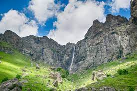
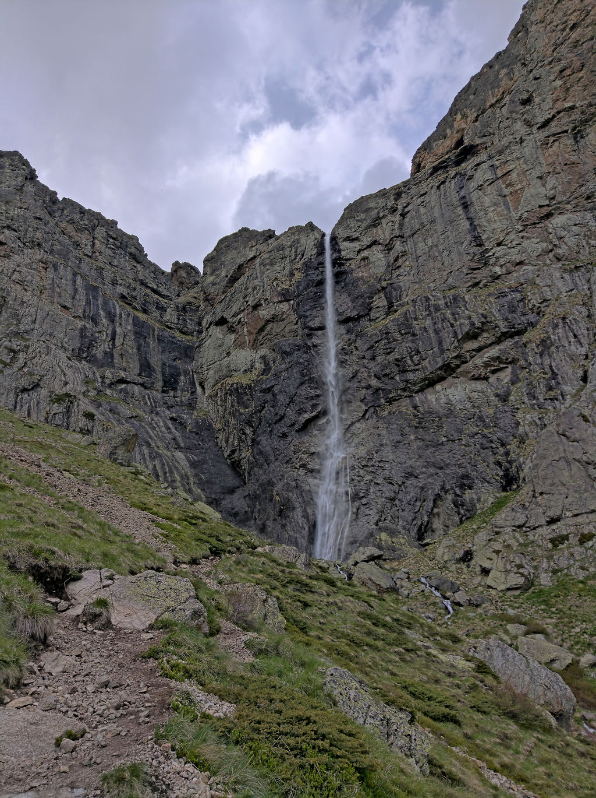

Bulgaria
Водопад "Райско пръскало"

Райското пръскало е най-високият постоянен водопад в България и на Балканския полуостров – 124,5 m. Намира се в Стара планина, на южния склон под най-високия старопланински връх – Ботев. На територията е на природен резерват „Джендема“, част от Национален парк „Централен Балкан“. Обявен е за защитен природен обект през 1965 г.

Образуван е от водите на Пръскалската река, идващи от вечния снежник, разположен под връх Ботев, който дори през лятото не се стопява напълно. След като тече по полегатия тревист склон на върха, потокът достига до горния край на скален пояс от отвесни скали, наричани Райските скали, и прави големия си скок. След това се спуска в бездните на Южния Джендем и се влива в Бяла река.
